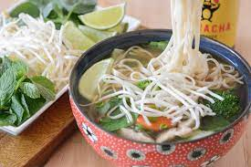

Pho

Description
Craving a taste of Vietnam but short on time? This simplified Pho recipe delivers the warm, comforting flavors you love without the hours-long simmer. Sure, traditional versions involve more effort, like the ones in Andrea Nguyen's cookbook or this authentic recipe, but this quick fix is perfect for busy weeknights. So, ditch the takeout menus and whip up a steaming bowl of Pho for your family in no time!
Ingredients
- 8 oz dried rice vermicelli noodles
- Desired meat: chicken, pork, steak or raw shrimp
- 1 large yellow onion, quartered
- 2 (2-inch pieces) fresh ginger, unpeeled and halved, length-wise
- 6 cups broth (chicken, beef or vegetable- depending on choice of protein)
- 2 cups of water
- 1/4 teaspoon ground coriander
- 1 whole clove
- 1 1/2 tablespoon fish sauce
- 1/4 teaspoon hoisin sauce
- 1/4 teaspoon soy sauce
- 1/4 teaspoon red chili paste (sambal oelek)
- 1 stick cinnamon
- salt and freshly ground black pepper
Garnish
- 4 green onions
- 2 fresh jalapeno peppers, thinly sliced and seeds removed
- 1 bunch fresh cilantro
- 1 bunch Thai basil leaves
- 1 cup fresh bean sprouts
- 2 limes, cut into wedges
- Siracha hot sauce - for heat, optional
Steps
- Place a large dry pot over medium heat, add the onion halves and ginger. Cook for 4 minutes, stirring occasionally.
- Add the broth, water, coriander, clove, fish sauce, hoisin sauce, soy sauce, chili garlic paste, cinnamon stick, and a pinch of fresh cracked salt and pepper to the pot. Bring to a slow boil, then reduce heat and simmer for 30 minutes.
- Meanwhile, prepare noodles according to package instructions.Oce soft, drain, rinse and set aside.
- Ready the garnishes in small bowls for serving: cilantro, basil, green onions, bean sprouts, lime wedges, and sliced chilies.
- 1-5 minutes before teh broth is done cooking, add desired meat to the broth to cook, just until done (2-3 minutes for raw, thinly sliced chicken or pork, 1-2 minutes for shrimp or thinly sliced steak).
- Discard the ginger, clove, cinnamon stick, and onion pieces from the pot.
- Divide the noodles among bowls;ladle broth on top (and meat). Add desired toppings.